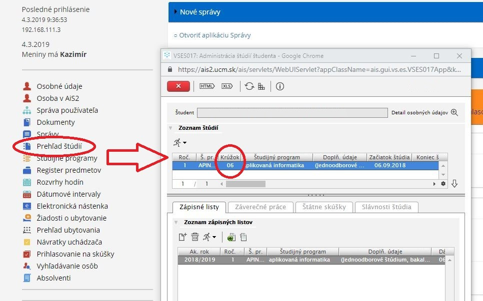

Legenda k rozvrhom
Študenti dennej formy si pred pozretím rozvrhu pozrú najskôr číslo krúžku v AIS2, do ktorého sú zaradení, napr.: 
Rozpis kontaktnej výučby pre študentov externého štúdia študijného programu aplikovaná informatika na FPV
Postup na pozretie si rozvrhu v AIS2 je tu.
V prípade zmeny v rozvrhoch pre denných študentov budú vykonané aktualizácie priamo v AIS-e, preto treba tieto preventívne sledovať.
Prístup k manuálom AIS2
V záujme jednotného vyhotovenia a úpravy bakalárskych prác je treba, aby sa študenti pridržiavali týchto zásad.